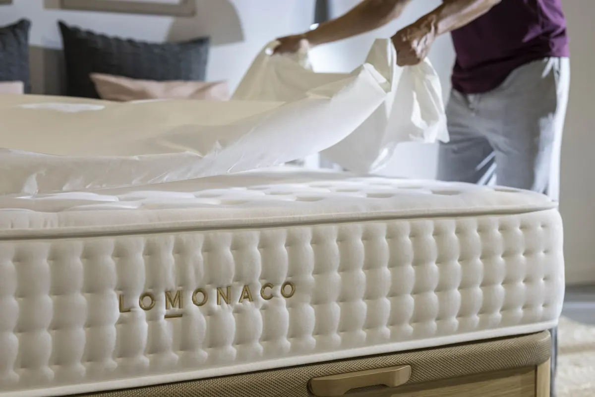

¿Cómo Encontrar un Buen Colchón?

¿Cómo Encontrar un Buen Colchón?
De media pasamos un tercio de nuestra vida durmiendo. Es quizá la acción más importante que realiza el ser humano para mantener los biorritmos, la energía vital y la que permite que el cerebro organice (y también descarte) los pensamientos del día. Es durante la noche cuando tiene lugar el sueño reparador; aquel que nos “recarga las pilas” y nos da energía para todo un día.
Lo más importante es entonces encontrar un buen colchón que sea el complemento perfecto para que durante las 7 u 8 horas que pasamos dormidos, descansemos de verdad, nos levantemos sin ningún tipo de dolor muscular y repletos de fuerza. Por esta razón, nos hemos propuesto ayudarte desde GRUPO LOMONACO en colaboración con Encuentracolchon.com. Sigue leyendo pues vamos a darte todas las claves para elegir tu colchón perfecto y para que lo puedas encontrar directamente en la web colaboradora.
¿Qué se debe mirar a la hora de comprar un colchón?
Preguntémonos, ¿cuáles son los puntos irreductibles que garantizan una buena posición de la espalda, una firmeza del colchón adecuada y cómo se consigue la temperatura ideal?
Lo primero es saber si somos personas de gran tamaño o más bien por debajo del promedio. Si el usuario del colchón es suficientemente pesado, necesitará un colchón más bien con tendencia a ser más duro o firme; por el contrario, si la persona es de peso promedio o por debajo, lo más recomendable es un colchón blando. También es una buena idea olvidarnos de los colchones duros, si estamos acostumbrados a dormir en decúbito lateral (de lado).
Además de estas dos claves mencionadas que tienen que ver con la posición y la firmeza, existe otra característica del colchón a la que debemos prestar atención: la temperatura. Los dos principales sistemas de sujección de la estructura del colchón son los muelles metálicos y los muelles de espuma o de otro material análogo. Hay una diferencia notable en cuanto a transpiración y a la temperatura que son capaces de mantener cuando estamos dormidos sobre ellos. Los muelles han demostrado ser una mejor opción para personas tendentes a ser calurosas y la espuma, por su parte, para personas que más bien pasan frío.
¿Cuáles son los principales materiales de fabricación?
Si te suenan palabras como látex, viscoelástica o incluso muelles ensacados, no te resultará difícil comprender las particularidades que vamos a explicar de los distintos materiales que pueden componer un colchón.
El uso de distintos materiales viene condicionado por la finalidad que va a tener la cama, es decir, no se usan los mismos materiales en la fabricación de una cama de matrimonio que en un colchón individual o en el colchón de una cuna, etc.
Si presentas alergia al polvo o a los ácaros, seguro que ya conoces el látex. Al no permitir anidar a los ácaros en el colchón, no tendrás problemas de reacciones alérgicas. Otros materiales que se utilizan comúnmente para la fabricación de colchones son las espumas. Las dos más conocidas son la viscoelástica y la espuma fría de alta densidad.
Estos materiales aportan aspectos muy útiles para aumentar la confortabilidad del colchón, es decir, los muelles ensacados o la espuma fría de alta densidad aseguran una mayor independencia de lecho y una mejor circulación del aire. Son colchones perfectos para personas que tienen tendencia a pasar calor mientras duermen y que se mueven.
¿Cómo elegir un colchón de calidad superior o premium?
Si realmente deseas hacer una inversión en descanso para los próximos 10 años, desde LOMONACO te recomendamos que mires las opciones de colchones de alta gama en Encuentracolchon.com
No solo encontrarás colchones fabricados con los más diversos materiales aplicando la última tecnología y las innovaciones más punteras en investigación y desarrollo, estarás apostando por la mejor relación calidad-precio del mercado.
Es natural que si deseamos tener un mejor descanso, la inversión en un colchón vaya a ser más elevada. Desconfía de todos aquellos que utilicen los adjetivos “premium”, “superior” o “alta gama” sin estar documentado. Es muy sencillo descubrirlo al ver la relación de materiales empleados en la ficha descriptiva del fabricante. Si no sale por ejemplo “látex natural”, es para desconfiar.
No olvides contactarnos si necesitas un mayor asesoramiento sobre adquirir un nuevo colchón en Encuentracolchon.com o en LOMONACO. Te queremos ayudar a descansar mejor.
¿Qué debemos saber a hora de elegir un colchón? Vamos a ver una serie de recomendaciones:
• Las recomendaciones de los equipos médicos, especialistas en espalda, son claras al respecto: se debe optar por un colchón de firmeza media (ni duro ni blando), que sustente la columna y a su vez que adapte a las curvas de la espalda.
• Hay un colchón para cada persona: Se debe elegir el colchón que mejor que adapte a nuestro Índice de Masa Corporal, nuestra altura, posibles dolencias, preferencias…etc.
• Revisa la base antes de cambiar el colchón: un somier o base tapizada en mal estado, puede anular los efectos de un buen colchón, además de contribuir al deterioro prematuro del mismo. Se recomienda cambiar entonces el equipo de descanso al completo.
Teniendo en cuenta que puedes pasar durmiendo al día una media de 7 horas, lo que puede suponer que pases unas 200.000 horas descansando sobre tu cama a lo largo de toda tu vida, ¿no crees que es suficiente razón para dedicar un mínimo esfuerzo en la elección de nuestro equipo de descanso?, piénsalo…